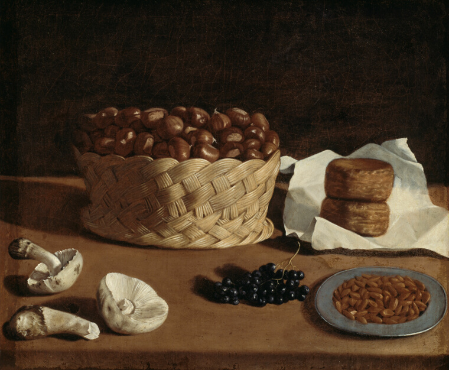
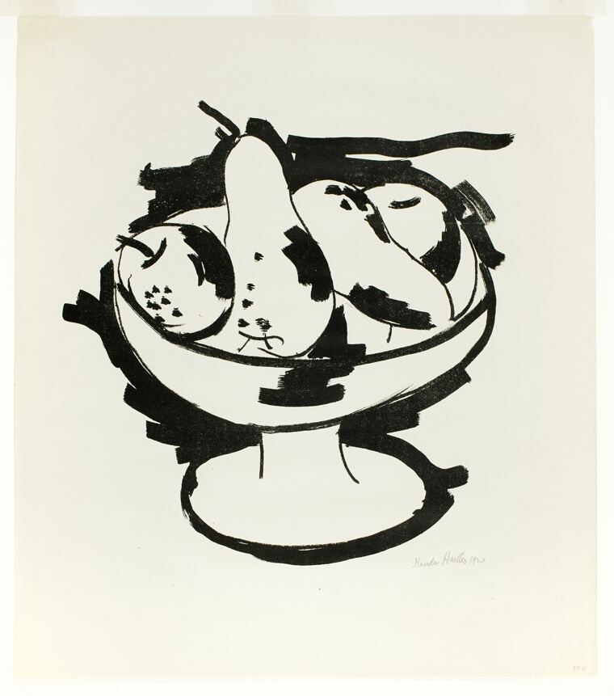
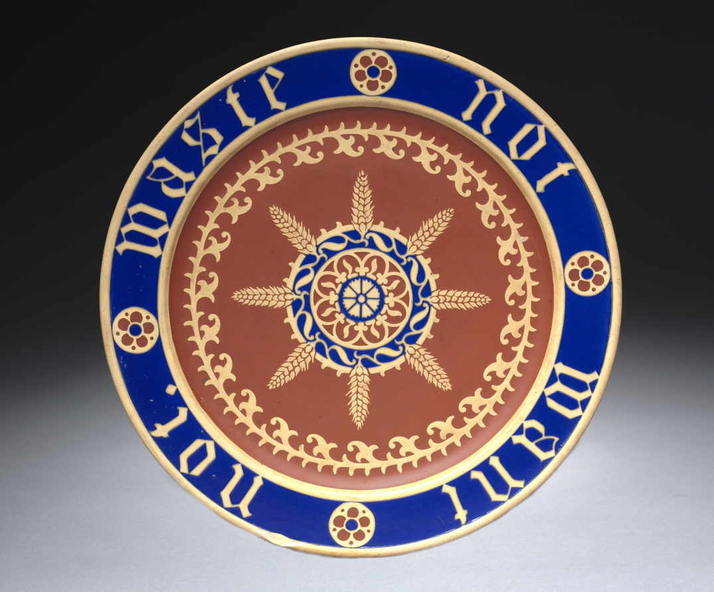
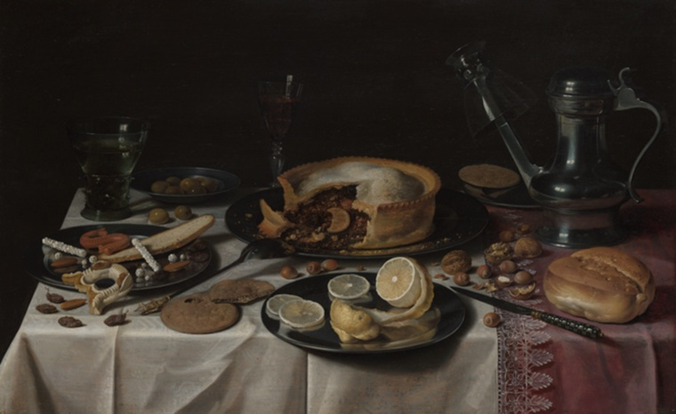
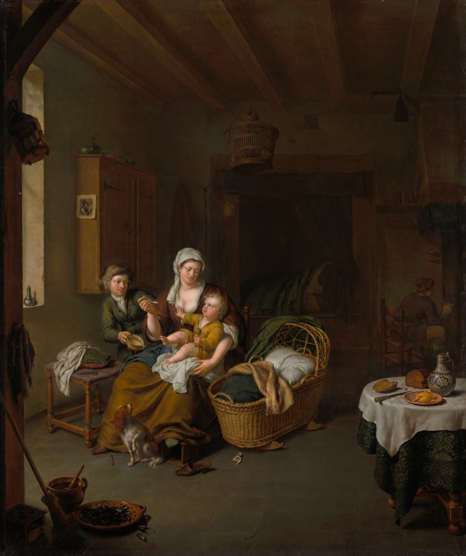
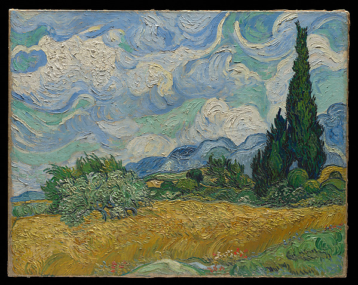
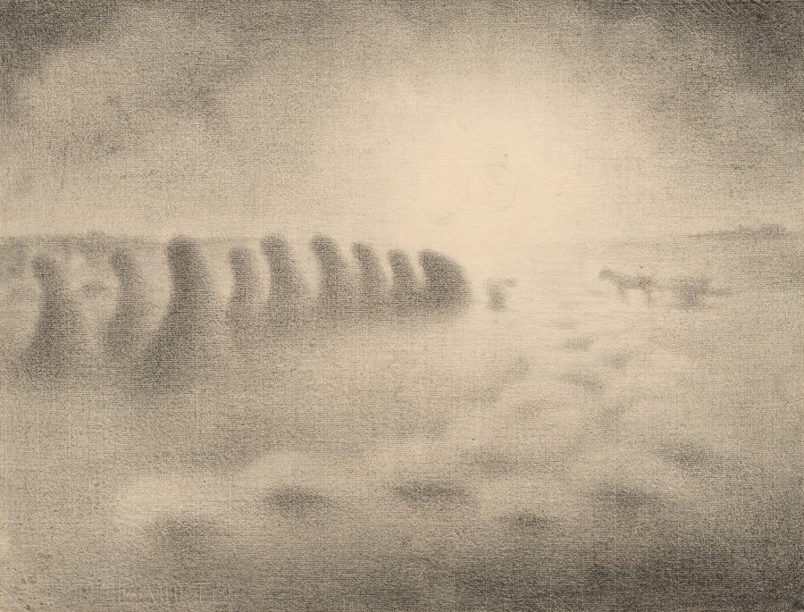

a long slow scroll · est. somebody's kitchen
bread, tea, the table — the holiness of being fed.
i mean it about the holiness. not a metaphor. you feed someone and for a minute the whole tired machinery of the world stops grinding. this page is long on purpose — scroll it slow, the way bread takes its time. (i was hungry when i made it. obviously.)

a basket of almonds, some mushrooms, bread wrapped in cloth. the painting doesn't show off — it just lets you stand in the kitchen and notice the way light falls on ordinary things the way you only do when you're really hungry.
𓍢ʚ ⟡ ɞ𓍢
a hunger that wants the whole world
emerson basically shouting i want everything, all of it into the void. this greedy, hungry refusal to be small — to build yourself vast enough to hold poisons and splendor both. honestly the most kitchen feeling there is. you ever stand at the open fridge at midnight wanting the entire world. yeah.

hartley made a simple thing wild — those fruits are barely recognizable, torn apart and put back as something almost anxious, like he was painting the feeling of hunger instead of the fruit. the black ink stays confident even while everything else comes apart.
⟡
killigrew cuts right through the noise — she's not flattering, she's seeing someone real, someone who built themselves instead of inheriting a name. in the 1600s that was radical. i put her here because a kitchen is exactly that: a thing you build, daily, with your hands, from nothing.

wheat sheaves radiating from the center like a blessing. somebody decided the plate the bread sits on deserved to be beautiful too. that's the whole religion, right there.
𓍢ʚ ⟡ ɞ𓍢
found · recipe · 1887
One quart of milk, six large onions, yolks of four eggs, three tablespoonfuls of butter, a large one of flour, one cup full of cream, salt, pepper. Put the butter in a frying pan. Cut the onions into thin slices and drop in the butter. Stir until they begin to cook; then cover tight and set back where they will simmer, but not burn, for half an hour. Now put the milk on to boil, and then add the dry flour to the onions and stir constantly for three minutes over the fire; then turn the mixture into the milk and cook fifteen minutes. Rub the soup through a strainer, return to the fire, season with salt and pepper. Beat the yolks of the eggs well, add the cream to them and stir into the soup. Cook three minutes, stirring constantly.
look at the kindness in the instructions — it knows you'll get distracted, so it tells you to cover the onions so they won't burn while you wander off. "but not burn." you can feel a hand on your shoulder steadying you. recipes are just recipes are love with measurements.

everything glowing against that black — bread, the lemon peel spiralling down, the wine catching light like it's lit from inside. generous and a little melancholy both, laying all this food out like it's precious right before it disappears. which it is. which we are.
⟡

the light here is almost whispered — gold, intimate, catching the woman's linen and the child's small hand in a room so lived-in you can smell the bread. no drama. just the unrepeatable quiet of being small and held.
𓍢ʚ ⟡ ɞ𓍢
found · birdsong
“Who-cooks-for-you;
who-cooks-for-you-all?”
this is real — it's the actual mnemonic birders use for the barred owl's call. a bird in the dark woods, and the words we hung on it are who cooks for you. even the owls are asking about dinner. who's feeding who. it undoes me a little.

the whole sky is trying to escape and the whole field is trying to hold still, both at once. the cypresses are the only things sure of what they are. and underneath it all: wheat. bread before it's bread. it makes you yearn.
⟡
poem · the whole earth is alive
playful and defiant — thoreau watching ants fight instead of reading about ancient wars, treating it like the same grand thing. it's the moment he decides the world right in front of him is worth more attention than any book. same energy as really tasting your food.

the haze of the charcoal makes everything tired but satisfied — wheat stooks fading into the distance like the day itself walking home. quiet, almost mournful, the way a field gets when everyone's finally gone in to eat.
𓍢ʚ ⟡ ɞ𓍢
ok. that's the kitchen. that's all of it, really —
somebody grew the wheat, somebody bent in the field till the light went hazy, somebody mixed the gall into ink to write the recipe down, somebody covered the onions so they wouldn't burn while you stepped away. it's all one long chain of people feeding people across a few hundred years. and now you. go eat something. drink some water. let somebody fix you a plate.
— saved this for you. (the soup is genuinely good, btw. i halved it.)